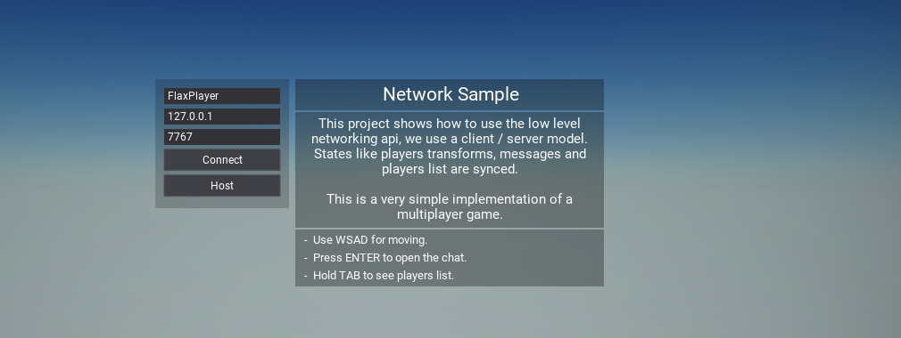
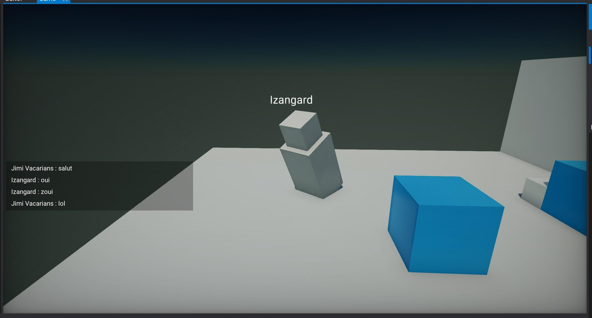
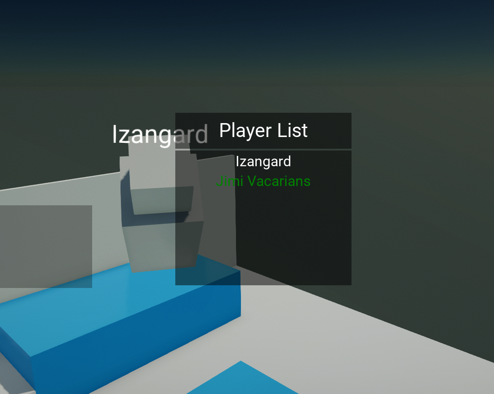

Network Sample

Network Sample is an open-source sample project that contains multiplayer game lobby implementation with player synchronization and chat. It can be used as a foundation for multiplayer projects using Flax low-level networking transportation layer.
Guide
- Download project from Github (as Zip or clone with Git)
- Open project
- Open
Menuscene and Play! - In the main menu, you can specify the player nickname, server IP, and port
- Start a server with Host button or use Connect button to connect running server
You can also use Game Cooker to build game into a standalone application to run multiple instances of clients and a server.
Screenshots


Overview
Main types overview:
- Player - player information container (Name, ID, Actor, etc.)
- GameSession - game service with players list including local player
- NetworkSession - game service with packets and network connections handling
- Game/Network/Packets... - various types of network packets used by the sample (implementations of
NetworkPacket)
License
Project is released under MIT License.